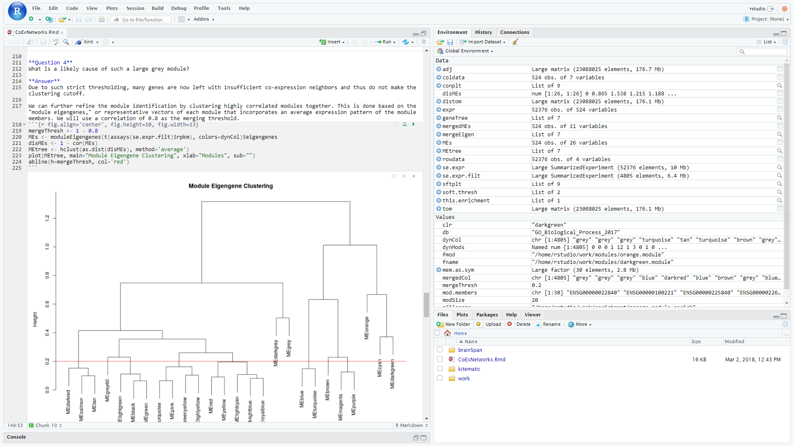
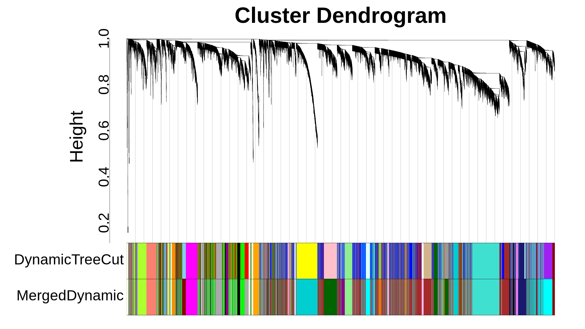
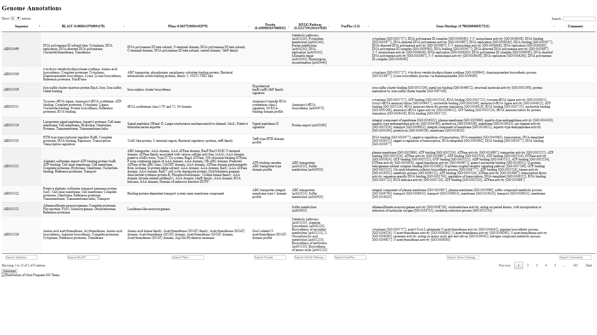
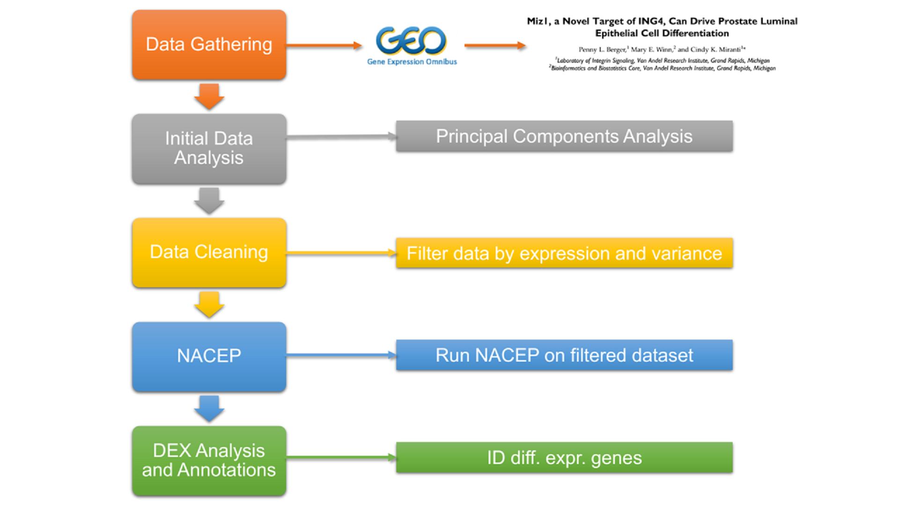
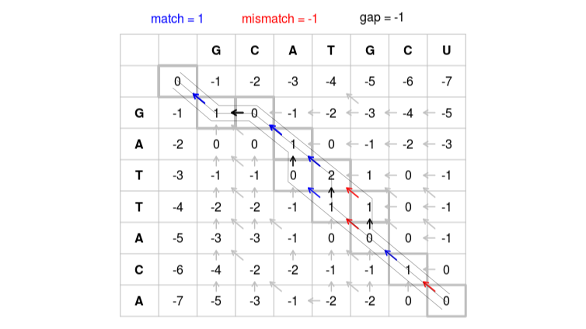

Gene Co-Expression Network Guided Tutorial
R, Docker
- Guided tutorial on the usage of Weighted Gene
Co-Expression Network Analysis
and Functional Enrichment Analysis
- Downloadable as a Docker image that includes
all data and libraries prepackaged for ease of use
- Includes an R Markdown notebook to guide the user
in the analysis

Gene Co-Expression Network Pipeline
R
- Basic pipeline for
Weighted Gene Co-Expression
Network Analysis (WGCNA)
- Includes scripts for creating a module-based
gene co-expression network with WGCNA
- Easy-to-use modifiable shell script for running
on a computational clustering utilizing a
SLURM job scheduler

Genome Annotation Table Web Application
Python 3, Django, SQLite3, Javascript, HTML5
- Django-based genome annotation table
- Easily load annotation data for personal use

NACEP Analysis of Tumorigenic Prostate Epithelial Cells
Python 3, R, Bash
- Network Analysis of Co-Expression Patterns
- Differential expression of genes between
immortal and tumorigenic prostate epithelial cells
- Publicly accessible data (GEO Accession GSE77460)

Sequence Alignment Implementations
Python 3
- Implementation of global and local
sequence alignments
- Reads text file with two strings, along with user's
choice of penalty matrix, and outputs aligned
strings and score
- Command-line scripts written in Python 3